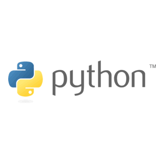
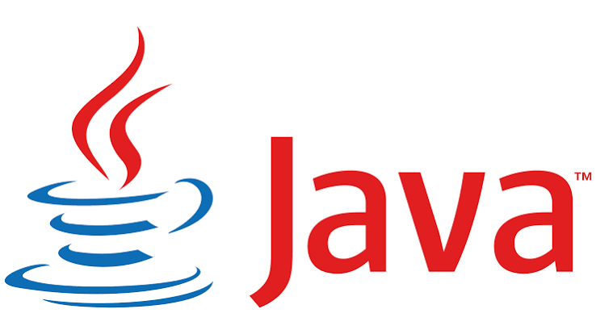
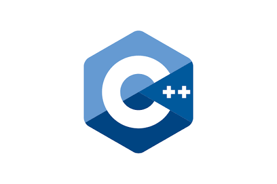
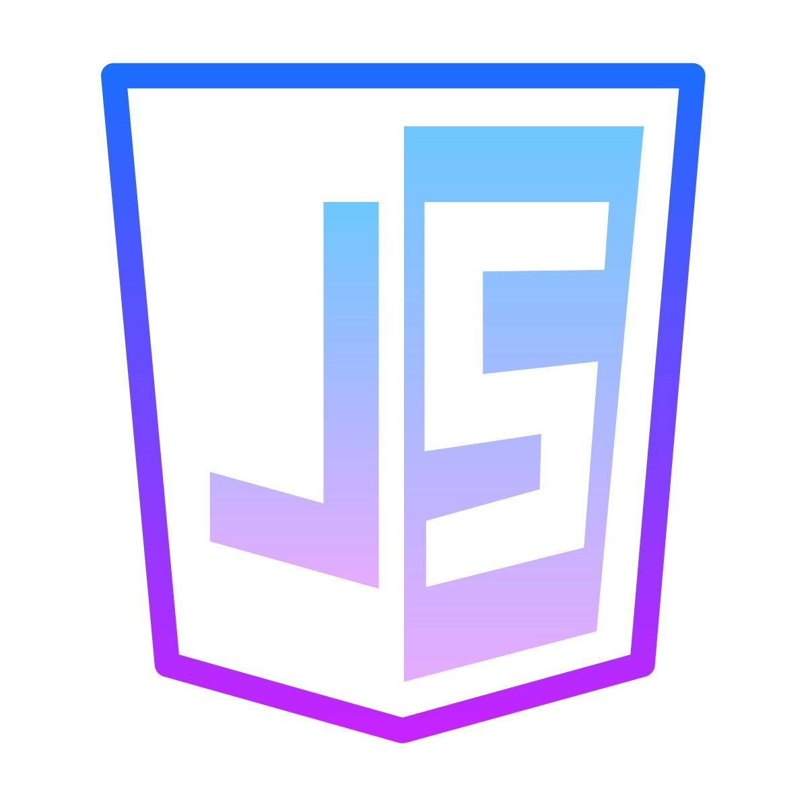

Python
Readable and beginner-friendly, widely used in data science, automation, and web development.
Official Python documentation →A programming language is how we give instructions to a computer in a form it can understand. Different languages suit different jobs: some are built for speed, others for simplicity, and others for working with data or the web.
Below are four of the most widely used languages today, each with a link to its official documentation.

Readable and beginner-friendly, widely used in data science, automation, and web development.
Official Python documentation →
A reliable, object-oriented language used for enterprise software, Android apps, and large systems.
Official Java documentation →
A fast, low-level language used in game engines, operating systems, and performance-critical software.
C++ reference documentation →
The language of the web browser, used to make web pages interactive, and also used on servers with Node.js.
MDN JavaScript docs →